Each one is a full homepage mockup built with the real cakes, prices, reviews and photos, shown on desktop and on a phone, plus a short scroll video. Nothing here is live. Pick the direction you want, or tell us which parts of which one, and that becomes the build.
The number is the hero. 20g protein, 0g added sugar, 150 calories, set huge, with blunt copy and hard black lines. The David direction.
Reads instantly as a serious protein product. Every cake card leads with its protein figure, there is a cake-vs-bar-vs-bakery comparison, and the box tiers are just big numbers. White ground, near-black ink, pink only on small marks.
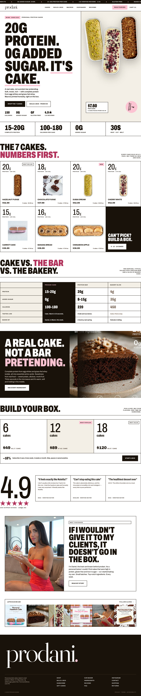
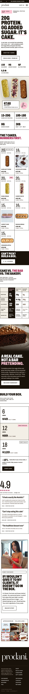
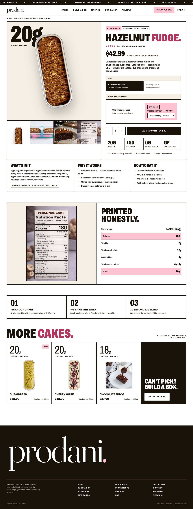
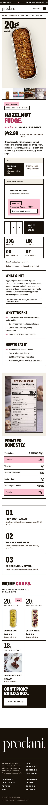
Every cake gets its own colour world. Chunky rounded type, pill buttons, stickers, a flavour of the week in the hero. The Crumbl direction.
The most playful of the four and the one that makes the seven flavours feel like a lineup you want to collect. Pink is the thread through nav, badges and the hero; each flavour brings its own hue to its card. The box builder shows the box from above, filled with the cakes you pick. The product page switches flavour with one tap.
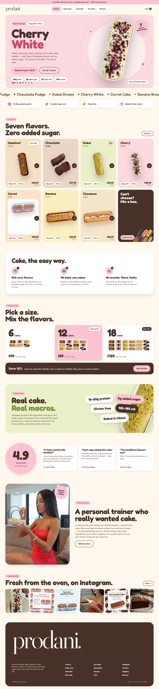
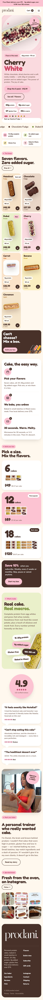
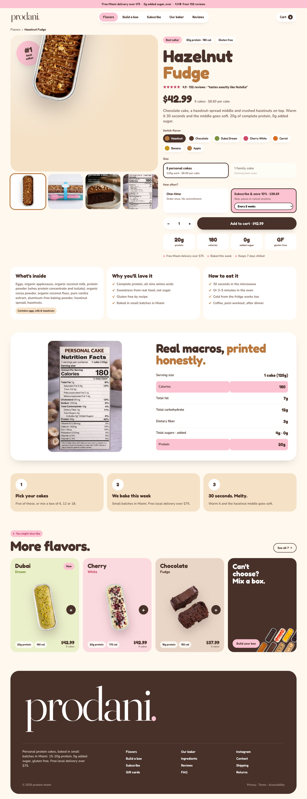
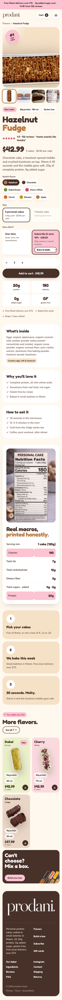
The same page as B at about 60% volume. Flavour colours washed toward white, stickers become plain badges, nothing is tilted, no marquee.
Keeps the round type and the flavour-per-card idea, but the page sits still: cakes stand upright, cards lift without rotating, the review score is a plain card instead of a sticker. Pink stays on badges and the subscribe button.
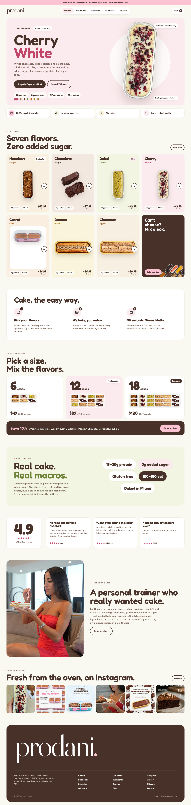
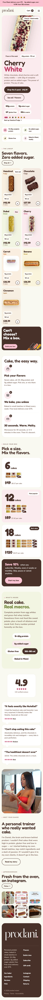
The same page at about 30% volume. Clean geometric type instead of the bubbly one, cream and white surfaces, and the flavour colour survives only as a dot next to each name.
This is the Flavor Drop structure wearing a calmer coat: the lineup, the box builder and the steps are identical, but nothing floats, tilts or shouts. Closest in mood to a premium bakery, with the playful bones kept underneath.
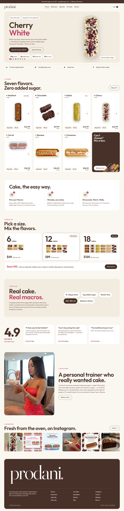
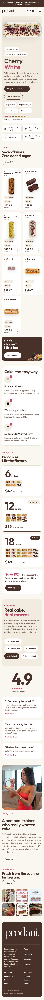
The warm bakery feeling of today's site, with the thinness gone. A heavy soft serif, big photography, cream and cocoa, pink as a stamp.
The closest to the current site in spirit and the easiest step to take: same warmth, same photos, but every headline is heavy and every card has presence. The hero is a full-bleed cake photo with a slow zoom. For a customer who already knows the brand, nothing feels foreign.
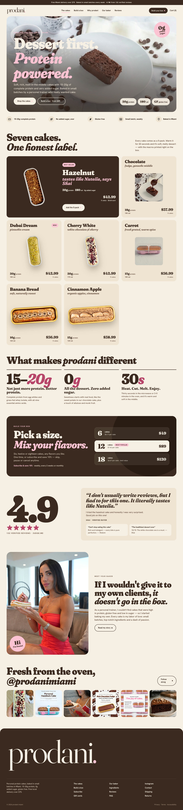
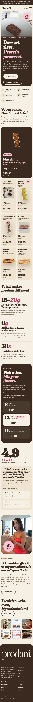
Dark ground, one pink highlight, heavy wide type. The cake splits open as you scroll and the macros are called out like a diagram. The wildcard.
Built for the "wow". The hero is pinned while you scroll: the cake opens, the crumb shows, the numbers point at it. Every cake is presented like a spec sheet, the ingredients like a formula. It is the furthest from a bakery and the closest to a performance brand.
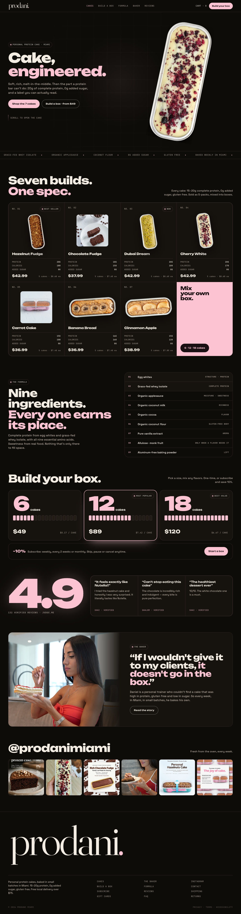
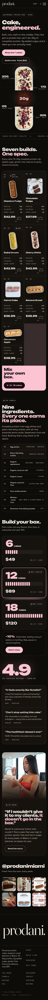
The still shows the cake already open. The video shows it opening as you scroll.
| A · Macro Bold | B · Flavor Drop | B2 · Soft | B3 · Quiet | C · Bold Bakery | E · Cake Lab | |
|---|---|---|---|---|---|---|
| Feels like | A protein brand that happens to be cake | A fun flavour lineup you collect | B, with the volume down | A calm bakery with B's bones | A premium bakery with muscle | A performance product, engineered |
| Closest reference | David | Crumbl | Crumbl, softer | Neither; quiet | Today's site, heavier | Neither; its own thing |
| Ground | White | Warm white + flavour colours | Warm white + pale tints | Cream + white | Cream | Near black |
| Pink | Small marks, one button | Nav, badges, hero | Badges, one button | A dot and a word | Stamps and underlines | The only highlight |
| Type | Heavy condensed sans | Round chunky sans | Round sans, lighter | Clean geometric sans | Heavy soft serif | Heavy wide sans + mono |
| Wow | Scale of the numbers | Colour, motion, stickers | Floating cake, box builder | Restraint | Photography and scale | Scroll-opening cake |
| Build | Easy | Medium | Medium | Easy | Easy | Hard |
| Product page shown | Yes | Yes | Same as B | On request | On request | On request |
Look at the phone versions first; that is where most customers will see the site. Then ask which one you would be proud to send to a new customer.
That is enough to start the build.